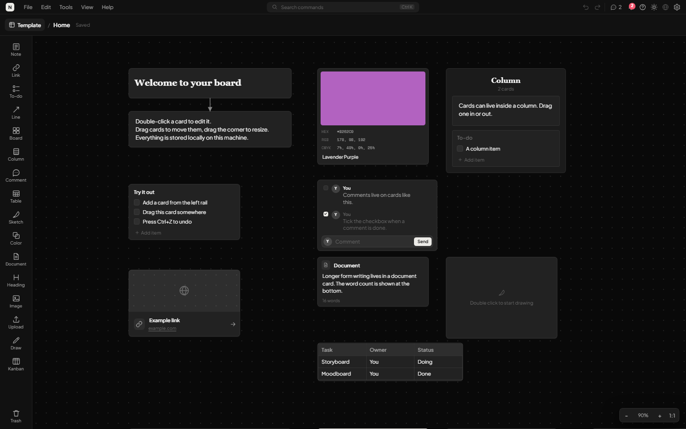
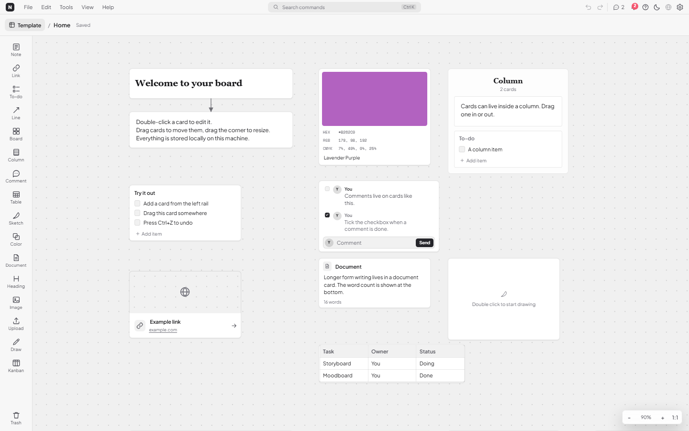
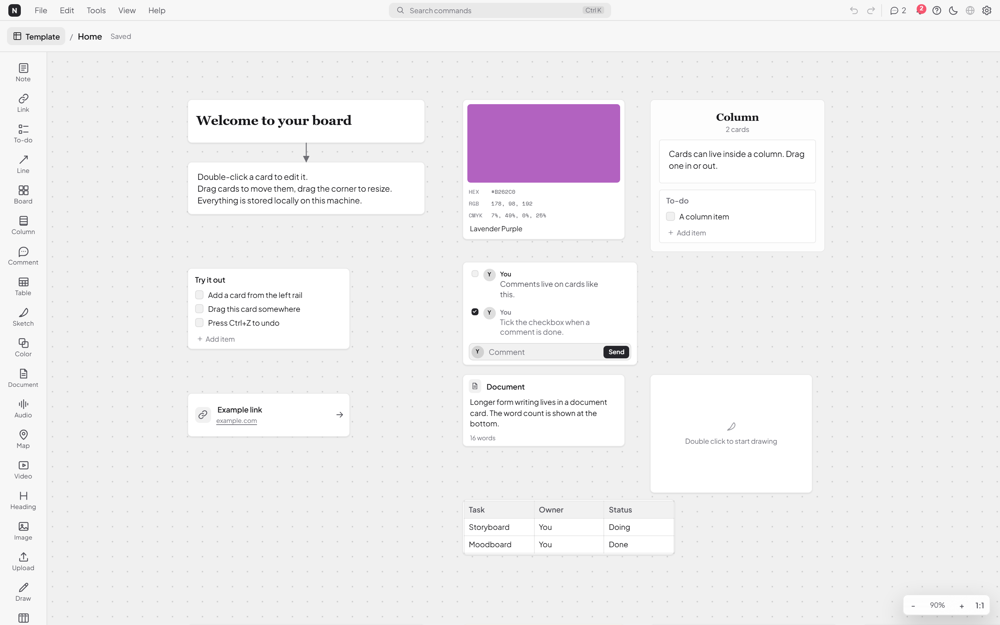

Boards that breathe
Infinite canvas, nested boards, columns and connections. Drag anything anywhere; undo is one keystroke.
Khaoyu Note 0.33 · local-first
Notes, kanban, tables, documents and drawing on one quiet canvas. An account is optional and disabled in this build. Your boards live in SQLite on this computer.

Built for focus
Everything is a card on a canvas. Move it, group it, connect it, or open it into a dedicated editor. The interface stays out of the way.
Infinite canvas, nested boards, columns and connections. Drag anything anywhere; undo is one keystroke.
Drop a kanban card, add columns and move work between them. No project template, no configuration.
A document card opens into a focused page with formatting, lists, links and export. Word count included.
Sketch cards and a full-page drawing editor with pen, pencil, highlighter and eraser.
The small tools that make a board useful: URLs with hero images, editable tables, swatches with HEX/RGB/CMYK.
Rust and SQLite. No server round trip, no account gate, no telemetry. Backups are a single folder plus assets.
Screens

Local-first, by design
Khaoyu Note opens a SQLite database and an assets folder. That is the whole backend. No account, no sync, no waiting for a network that is not there.

Get the app
Windows installers are built from this repository. No account is created, and nothing leaves the machine.